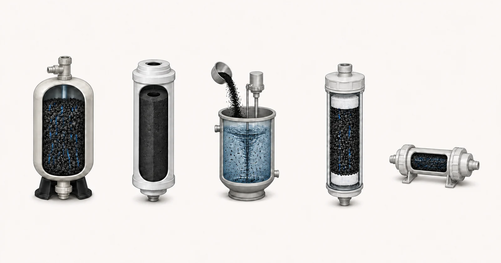

Direct answer
GAC, CTO, PAC, UDF and T33 describe different media forms, cartridge constructions or system positions. GAC is granular activated carbon used in vessels or cartridges. CTO commonly refers to a carbon-block cartridge, while UDF is commonly used for a granular-carbon cartridge. T33 usually describes an inline post-carbon polishing cartridge. PAC is powdered activated carbon dosed into water and removed in a later separation step. These labels do not prove a removal claim or make the formats interchangeable. Selection must connect the water report and target compound to contact conditions, flow, pressure loss, particle control, equipment dimensions, service access and current evidence for the proposed media and construction.

- GAC vessel media
- CTO carbon block
- PAC dosing
- UDF granular cartridge
- T33 inline polishing cartridge
Conceptual illustration. Not test results, product certification or an engineering drawing.
Start with the buyer's problem
An OEM buyer may need a compact replacement cartridge, an inline taste-polishing stage or bulk media for a larger treatment vessel. An industrial designer may instead be comparing a fixed GAC bed with a PAC dosing process. The names can look like a product ladder, but they describe different ways of bringing water and carbon together. The useful comparison is therefore functional: where the carbon sits, how water moves through or around it, how much contact is available, and how exhausted carbon is detected and replaced.
Connection and construction details matter as much as the media name. A block cartridge can combine adsorption with physical filtration behavior and may create a different pressure profile from a loose granular bed. A granular cartridge needs screens or pads that retain media and control fines. An inline T33 unit must match fittings, orientation and final polishing duty. PAC requires dosing, mixing, contact and downstream solids separation; it is not installed as a conventional flow-through cartridge.
What report and operating data are required
Describe the application before naming a format. The following information allows the supplier to decide whether the project needs a vessel medium, replaceable cartridge, inline polishing unit or a separate dosing process.
- source water and complete available analysis
- target compound or sensory endpoint and required outlet goal
- average and peak flow, daily runtime and intermittent or continuous operation
- available housing, vessel, connection and cartridge dimensions
- allowable clean and terminal pressure drop
- turbidity, suspended solids, TOC or COD and biological context
- upstream and downstream treatment stages
- replacement access, waste-handling method and monitoring plan
A report should be recent enough to represent the proposed source and should identify the sample date and location. If the water changes by season, production batch or operating state, provide the range rather than one convenient result. State the required treated-water objective separately from the current analysis. When a value is unknown, mark it as unknown; a visible gap is safer than a guessed number.
Hydraulic information belongs beside chemistry. Average flow alone can hide short peak conditions, intermittent duty and long stagnation. Confirm daily runtime, peak demand, available pressure, allowable pressure loss, equipment dimensions and who will monitor and replace the carbon. These details decide whether an otherwise plausible media can be used in a serviceable system.
Selection logic
Use GAC in a vessel discussion when the project can provide a defined bed, distributors, hydraulic loading, sampling and media service. Use a granular cartridge discussion when the same media form must fit a replaceable housing at a much smaller scale. These applications cannot be compared by media mass alone because bed geometry, flow distribution, bypass risk and contact time differ.
Use CTO or another carbon-block construction when the required cartridge format, particle retention behavior and pressure profile are compatible with the system. Block density, binder system, dimensions and manufacturing consistency become part of the review. A block label does not establish contaminant reduction; the tested construction and conditions must support any specific public claim.
Use T33 as a system-position description only after confirming what the inline unit is expected to polish and what enters it. Use PAC when the process includes controlled dosing and later separation. PAC performance depends on dose, mixing, contact, competing matter and removal of the spent powder. It should not be substituted into a flow-through design merely because it is also activated carbon.
Pretreatment, equipment and operating context
A comparison should include the complete pressure and maintenance path. Cartridge systems need verified dimensions, sealing surfaces, orientation and changeout access. Vessel systems need distributor and underdrain review, bed expansion allowance where backwashing applies, sampling points and a plan for spent media. PAC systems require safe storage, dosing equipment, dispersion and a solids-removal barrier.
Pretreatment can change the decision. High solids may block cartridges or consume bed volume; natural organic matter can compete with the target; oxidants and biological conditions affect the service strategy. The format is selected after these risks are defined, not used to hide missing water data. Yuchen Water can then match supply options and related housings or equipment support to the reviewed duty.
Common mistakes
- Using GAC and UDF as if they always identify different carbon chemistry
- Treating CTO as proof of a particular chlorine or contaminant claim
- Calling every inline carbon cartridge T33 without checking duty and connection
- Installing PAC in a process without a downstream separation step
- Comparing formats by purchase price while ignoring pressure, service and monitoring
Evidence and service boundary
Format comparison is not a certification statement. A certification belongs to the listed product and claim under the relevant program, not to all items that share a generic format. Likewise, a test result belongs to the tested media and construction. Public copy must preserve that relationship and avoid transferring a result between granular, block and inline products.
Yuchen Water can supply media and cartridge constructions and support the equipment-matching review. Final format, specification, quantity and replacement plan are confirmed only after the water report, dimensions, hydraulic duty and treatment objective are reviewed. If the buyer is still defining the equipment, the first output should be a technical direction and a list of missing inputs rather than a premature item selection.
Yuchen Water reviews the target and evidence first, then identifies the appropriate carbon format and material questions, supporting pretreatment and equipment needs, and the documents or tests still required. The output can be a preliminary direction, a request for missing information, or a supportable material and equipment recommendation. A recommendation is not released simply because a buyer supplied a product name.
After supply, technical support can cover document confirmation, installation and flushing questions, remote commissioning guidance, monitoring points and replacement planning within the agreed scope. Actual performance still depends on the approved material, complete equipment, source water, installation, operation and maintenance. Published guidance cannot replace the project review.
No final material, capacity, service life, removal percentage or project result is promised before the report, construction, evidence and operating conditions are reviewed.
Official technical sources
These sources explain treatment principles or certification boundaries. They do not certify Yuchen Water products and do not replace project-specific evidence.
Related activated-carbon guidance
Continue through the knowledge cluster, review selected sample evidence only within its stated limits, compare product formats, or submit the report for a technical review.